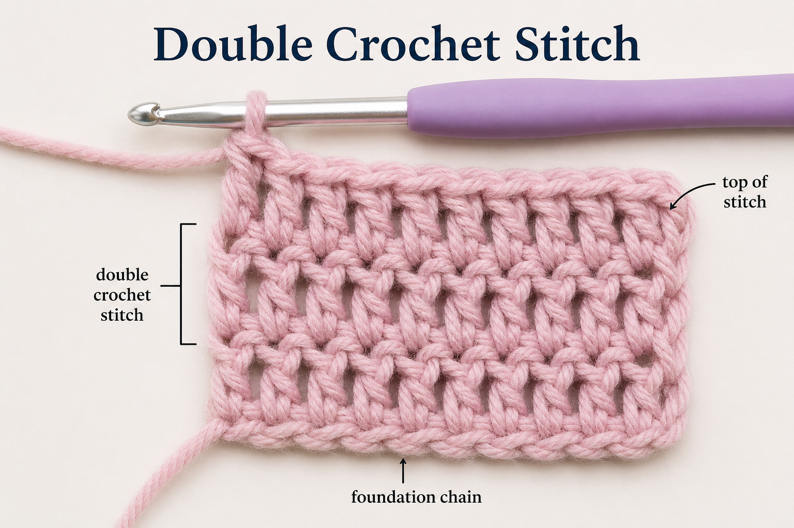

Double Crochet Stitch
The double crochet stitch is a beginner-friendly stitch that works up quickly and creates a soft, slightly open fabric. It is commonly used in blankets, scarves, and many beginner crochet projects.
What is a Double Crochet Stitch?
A double crochet stitch is made by wrapping the yarn over your hook before inserting it into a stitch. This extra step makes the stitch taller than a single crochet, giving your project more flexibility and a lighter texture.

Watch the Tutorial
Follow along with this video to see each step of the double crochet stitch.
Steps for Making a Double Crochet Stitch
- Start with a foundation chain.
- Yarn over your hook.
- Insert your hook into the stitch.
- Yarn over and pull up a loop (3 loops on hook).
- Yarn over and pull through 2 loops.
- Yarn over again and pull through the last 2 loops.
Beginner Tips
- Keep your yarn tension consistent.
- Do not pull stitches too tight.
- Count your stitches at the end of each row.
- Practice regularly to improve speed and consistency.